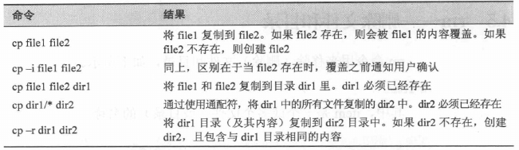
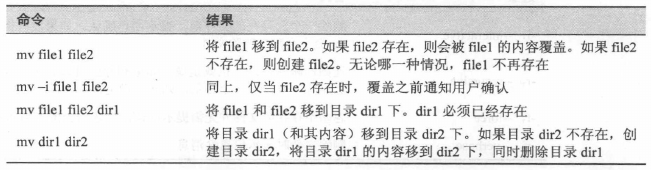
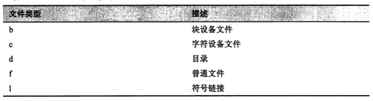
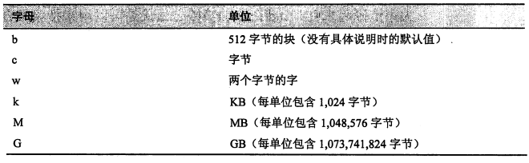
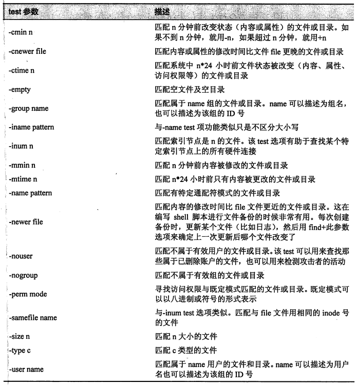
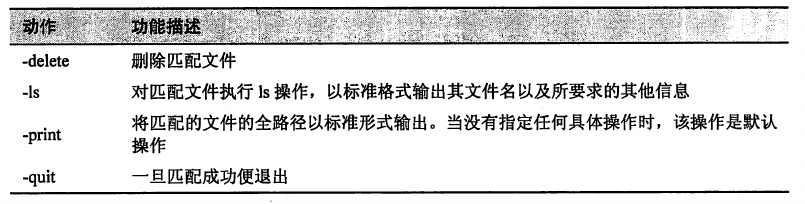
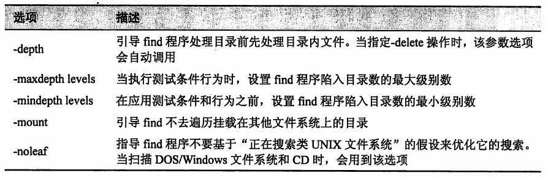

1. 文件相关命令
1.1. file
determine file type
- 确定文件类型
- 查看文件内容的简短说明
- Linux 系统中的文件名不需要反应文件的内容
file filename
1.2. stat
display file or file system status
- 显示文件或文件系统的状态
stat filename
1.3. touch
change file timestamps
- 更改文件的日期时间。如果文件不存在，会新建该文件
touch filename
1.4. cp
copy files and directories
复制文件和目录
两种使用方式
# 方式一
cp item1 item2 # 将单个文件或目录 item1 复制到文件或目录 item2 中
# 方式二
cp item... directory # 将多个 item (文件或目录) 复制进一个目录中
- 选项
- 示例

1.5. mv
move (rename) files
移动或重命名文件
两种使用方式
# 方式一
mv item1 item2 # 将文件(或目录) item1 移动(或重命名)为 item2
# 方式二
mv item... directory # 将一个或多个 item 从一个目录移动到另一个目录下
- 选项
- 示例

1.6. rm
remove files or directories
删除文件和目录
注意
- 删除后，无法恢复
- 与通配符一起使用时要特别小心
- 使用技巧
- 当与通配符一起使用时，可以使用 ls 命令预先对通配符做测试
- 测试没有问题后，将 ls 替换为 rm。
选项
- 示例
1.7. ln
make links between files
创建链接
两种使用方式
# 方式一
ln file link # 创建硬链接
# 方式二
ln -s item link # 创建符号链接。item 可以是文件也可以是目录
1.8. locate
通过文件名查找文件
locate 通过快速搜索数据库，以寻找路径名与给定子字符串相匹配的文件，同时输出所有匹配的结果。
示例
locate bin/zip
locate zip | grep bin
在现代 Linux 发行版中，一般使用的是 slocate 和 mlocate 这两个最常见的衍生体。
locate 的搜索数据库从何而来？
- locate 搜索数据库由 updatedb 创建。
- 通常 updatedb 作为一个 cron 任务定期执行。
- 如果需要查找最新的数据库，需要运行 sudo updatedb，进行手动更新。
1.9. find
search for files in a directory hierarchy
在文件系统目录框架种查找文件
依据文件的各种属性在既定的目录（及其子目录）里查找。
可以用来搜索符合特定要求的文件，它通过综合应用 test 选项、action 选项以及 option 选项实现高级文件搜索。
find ~ # 列出主目录下的文件列表清单
find ~ | wc -l # 统计主目录下的文件（包括文件夹）总量
1.9.1. find 的选项详解
test 选项
- 文件类型

- 示例
find ~ -type d | wc -l # 统计主目录下的目录个数
find ~ -type f | wc -l # 统计主目录下的普通文件个数
- 文件大小

文件大小限制
+：表示查找的文件大小要比给定的数值大-：表示查找的文件大小要比给定的数值小- 没有符号则表示与给定值完全相等
find 命令的常见 test 项参数
- “+” 和 “-” 号的用法适用于所有用到数值参数的情况

# 一个综合示例
find ~ -type f -name '*.JPG' -size +1M | wc -l # 避免 shell 扩展，将通配符用单引号括起来
逻辑操作符
- 用于描述 test 参数之间的逻辑关系
示例
# 找出所有不是 0600 权限的文件以及不是 0700 权限的目录
find ~ \( -type f -not -perm 0600 \) -or \( -type d -not -perm 0700 \)
- find 命令的逻辑操作符
- and 是默认的逻辑关系

- 满足短路原则
- expr1 -operator expr2
- 短路原则主要是为了提高执行效率。
action 选项
用于对搜索到的文件进行处理。find 命令允许直接对搜索结果执行动作。
预定义操作
- 对搜索到的文件进行操作, 既可以用诸多现成的预定义动作指令, 也可以使用用户自定义的动作。
预定义的 find 命令操作

每个 test 选项和 action 选项之间默认的逻辑关系是与(and)逻辑。
test 选项与 action 选项之间的逻辑关系决定了它们的执行情况, 所以 test 选项和 action 选项的顺序很重要。
示例
find ~ -type f -name '*.BAK' -print
# 等价命令
find ~ -type f -and -name '*.BAK' -and -print
用户自定义操作
-exec command '{}' ';'- command 表示要执行的操作命令名
- {} 花括号代表的是当前路径
- 分号作为必需的分隔符表示命令结束
- 由于括号和分号字符在 shell 环境下有特殊含义, 所以在输入命令行时, 要将它们用引号引起来或者用转义符隔开。
- 可以交互式地执行用户自定义操作。通过使用 -ok 操作取代 -exec 操作, 每一次指定命令执行之前系统都会询问用户。
-ok command '{}' ';'
提高效率
- 当使用 -exec 操作时, 每次查找到匹配文件后都会调用执行一次指定命令。 但有时希望只调用一次命令就完成对所有匹配文件的操作。
使用 +
# 每匹配一个文件，就会调用一次 ls -l 命令。
find ~ -type f -name '*test*' -exec ls -l '{}' ';'
# 结果相同，但是会合并匹配结果，只会调用一次 ls -l 命令。
find ~ -type f -name '*test*' -exec ls -l '{}' '+'
使用 xargs- xargs 处理标准输入信息并将其转变为某指定命令的输入参数列表。
find ~ -type f -name '*test*' -print | xargs ls -l
option 选项
option 选项用于控制 find 命令的搜索范围。
在构成 find 命令的表达式时, 它们可能包含在其他测试选项或行为选项之中。
常用的 option 选项
